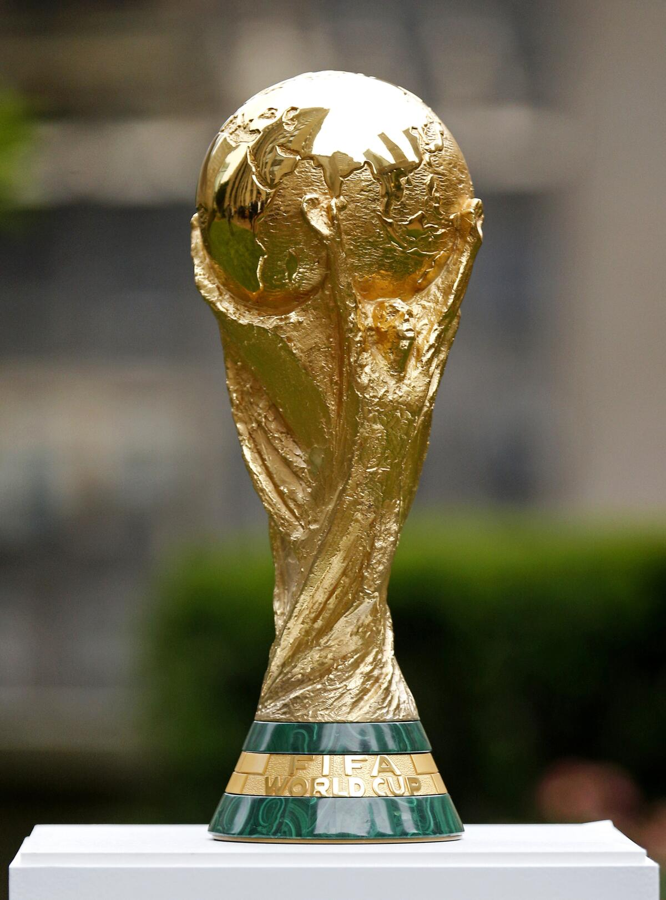

La Copa Mundial de la FIFA, también conocida como Copa del Mundo o Mundial, es el torneo internacional de fútbol masculino más importante a nivel de selecciones nacionales.
Organizada por la FIFA, reúne a los mejores equipos del planeta y se celebra cada cuatro años desde 1930. Solo se ha suspendido en dos ocasiones (1942 y 1946) debido a la Segunda Guerra Mundial.
La Copa del Mundo consta de dos etapas principales:
Fase de clasificación: participan más de 200 selecciones nacionales de todo el mundo.
Fase final: desde la edición de 2026 competirán 48 equipos, durante aproximadamente un mes en un país o varios países anfitriones.
